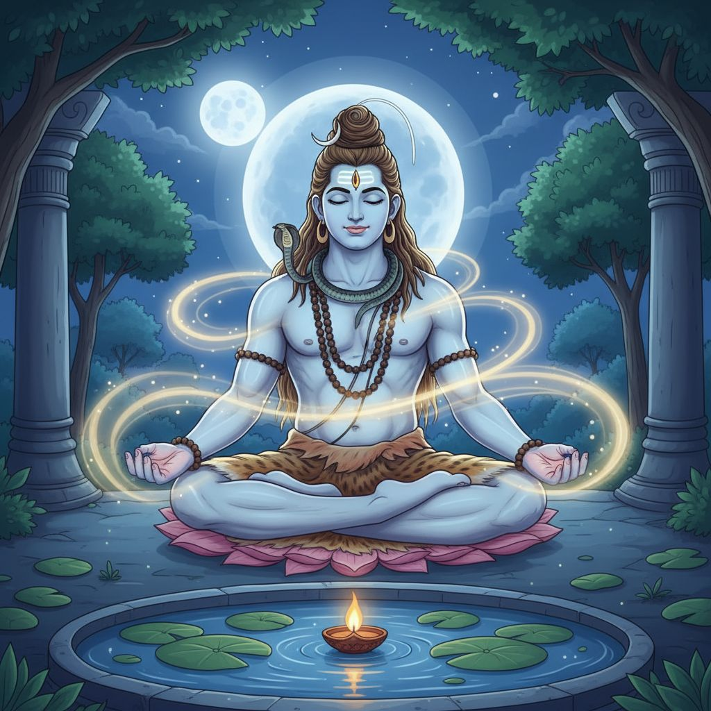

यह विषय अभी क्यों महत्वपूर्ण है
साल 2026 में वेलनेस की बातचीत का केंद्र तेजी से चिंता, नींद की समस्या, भावनात्मक बोझ और नर्वस सिस्टम रेगुलेशन की ओर जा रहा है। आधुनिक मनुष्य अब केवल उत्पादकता बढ़ाने का उपाय नहीं पूछ रहा, बल्कि यह पूछ रहा है कि भीतर से स्थिर, सुरक्षित और पोषित कैसे महसूस किया जाए। वैदिक दृष्टि इस संकट को अलग तरीके से देखती है। वह मनुष्य को केवल ठीक किए जाने वाली मशीन नहीं, बल्कि शरीर, प्राण, मन, कर्म, भक्ति और चेतना का एक पवित्र क्षेत्र मानती है।

उपचार, स्थिरता और भीतरी भय से मुक्ति से जुड़े मंत्रों में महामृत्युंजय मंत्र का विशेष स्थान है। यह मंत्र त्र्यम्बक रुद्र-शिव को समर्पित है, जिनकी ऊर्जा परिवर्तन, संरक्षण और बंधनों से मुक्ति से जुड़ी मानी जाती है। वैदिक ज्योतिषीय उपायों के संदर्भ में यह मंत्र उन अवधियों में विशेष रूप से जपा जाता है, जब व्यक्ति भावनात्मक भारीपन, लगातार भय, नींद की अशांति, शोक या कर्मजन्य दबाव से गुजर रहा हो।
यह लेख देखता है कि वैदिक और उत्तरवर्ती शैव परंपरा वास्तव में इस मंत्र के बारे में क्या संकेत देती है, इसकी ऊर्जा को कैसे समझा जाता है, और इसे भक्ति तथा समग्र कल्याण के अभ्यास के रूप में कैसे अपनाया जा सकता है।
वैदिक परंपरा में मंत्र का स्थान
यह प्रसिद्ध मंत्र ऋग्वेद 7.59.12 में मिलता है और यजुर्वेद परंपरा में भी आता है:
ॐ त्र्यम्बकं यजामहे सुगन्धिं पुष्टिवर्धनम्
उर्वारुकमिव बन्धनान्मृत्योर्मुक्षीय मामृतात्
इसका व्यापक अर्थ है: "हम त्रिनेत्र भगवान की उपासना करते हैं, जो सुगंधित हैं, जीवन को पुष्ट करने वाले हैं। जैसे पका हुआ फल डंठल से सहज छूट जाता है, वैसे ही हम बंधनों और मृत्यु-भय से मुक्त हों, पर अमृततत्त्व से विच्छिन्न न हों।"
यहाँ एक महत्वपूर्ण बात है। यह मंत्र केवल शारीरिक मृत्यु से बचने की प्रार्थना नहीं है। यह बंधन से मुक्ति की प्रार्थना भी है: भय, चिपकाव, थकावट, मानसिक संकुचन और वह आंतरिक घबराहट जो जीवन को छोटा बना देती है।
त्र्यम्बक कौन हैं, और यहाँ शिव का आह्वान क्यों है?
वैदिक और शैव परंपरा में त्र्यम्बक का अर्थ है "तीन नेत्रों वाले"। तीसरा नेत्र उच्च दृष्टि, गहरी विवेकशक्ति और अज्ञान को जलाने वाली अग्नि का प्रतीक है। रुद्र-शिव उग्र हैं, पर उनकी उग्रता औषधि के समान है। वह उस सबको काटती है जो जीवन-शक्ति को दबाता है।
जब शिव की उपासना महामृत्युंजय के माध्यम से की जाती है, तब वे केवल संहार के देवता नहीं रहते। वे प्राण के रक्षक, चेतना को स्थिर करने वाले, और भय से समर्पण की ओर ले जाने वाले देवत्व बन जाते हैं। इसी कारण बीमारी, थकान, शोक, अनिश्चितता और जीवन के कठिन संक्रमणों में यह मंत्र अत्यंत प्रिय बना रहा है।
वैदिक शास्त्र यहाँ उपचार के बारे में क्या संकेत देते हैं
वैदिक भाषा में उपचार केवल लक्षण घटाने तक सीमित नहीं है। यह मंत्र पुनर्स्थापन के कई स्तरों की ओर संकेत करता है:
- बंधन से मुक्ति: फल का डंठल से सहज छूटना बताता है कि मुक्ति हिंसक भागना नहीं, स्वाभाविक छोड़ना है।
- पोषण और सुदृढ़ता: पुष्टिवर्धनम् वृद्धि, पोषण और भीतरी सहारे की ओर संकेत करता है।
- सूक्ष्म सुगंध: सुगन्धिम् भीतर से फैलने वाली सामंजस्यपूर्ण, सात्त्विक गुणवत्ता को दर्शाता है।
- अमृततत्त्व से जुड़ाव: प्रार्थना यह नहीं कहती कि हमें अमर तत्त्व से काट दिया जाए।
अर्थात, शास्त्र उपचार को प्राणशक्ति, स्पष्टता और चेतना के अमृत केंद्र से पुनः जुड़ने के रूप में प्रस्तुत करते हैं।
उपाय-ज्योतिष की दृष्टि
जीवित वैदिक परंपरा में महामृत्युंजय मंत्र उन अवधियों में प्रायः सुझाया जाता है, जब भय, थकावट, अनिश्चितता और बाधित विश्राम बढ़ जाता है। अलग-अलग ज्योतिषी इसकी व्याख्या अलग तरह से कर सकते हैं, पर व्यापक उपाय-तर्क प्रायः समान रहता है:
- जब शनि के प्रभाव से भारीपन, विलंब, अकेलापन या अस्तित्वगत दबाव बढ़े, तब शिव-उपासना धैर्य, समर्पण और परिपक्वता देती है।
- जब राहु चिंता, जुनून, अति-उत्तेजना या अनियमित नींद बढ़ाए, तब मंत्र और अनुशासित भक्ति मन को स्थिर करती है।
- जब चंद्रमा कमजोर या पीड़ित हो, तब चेतना को शीतल, संतुलित और पवित्र करने वाले अभ्यास अधिक उपयोगी होते हैं।
- जब जीवन कर्मजन्य दबाव से भरा लगे, तब महामृत्युंजय का उपयोग अंधविश्वास की तरह नहीं, बल्कि साहस, विनम्रता और आंतरिक स्थिरता के साथ स्वयं को पुनः संरेखित करने के लिए किया जाता है।
इसका अर्थ यह नहीं कि हर चिंतित व्यक्ति की कुंडली एक जैसी होगी या हर किसी को एक ही उपाय चाहिए होगा। वैदिक काउंसलिंग तब श्रेष्ठ होती है, जब उपाय व्यक्ति-विशेष के अनुसार हों। फिर भी, जहाँ भय, हानि का तनाव, भावनात्मक थकावट या गहरा संक्रमण प्रधान हो, वहाँ शिव-तत्त्व विशेष रूप से प्रासंगिक माना जाता है।
चिंता, नींद और भावनात्मक थकान: वास्तविक संबंध क्या है
आयुर्वेदिक दृष्टि से, चिंता और खराब नींद से जूझ रहे अनेक लोगों में वात वृद्धि के संकेत दिखते हैं: अनियमितता, अधिक सोच, शुष्कता, इंद्रिय-अतिभार और रात में शांत न हो पाना। ऐसे में उपाय केवल मानसिक नहीं होता। वह लय, भक्ति, शरीर और ऊर्जा के स्तर पर भी काम करता है।
यहीं महामृत्युंजय मंत्र समग्र अभ्यास में गहरी भूमिका निभा सकता है:
- इसकी ध्वनि-रचना बिखरे हुए मन को एक दोहराव और धारणशीलता देती है।
- शिव भाव नियंत्रण की जिद छोड़कर समर्पण सिखाता है।
- अनुष्ठानिक संदर्भ शाम या कठिन संक्रमणों में जीवन को पवित्र लय देता है।
- भक्ति का हृदय अकेलेपन, भय और भावनात्मक कठोरता को नरम करता है।
यह मंत्र तब भी चिकित्सा, थेरेपी या नींद-संबंधी उपचार का विकल्प नहीं है, जब उनकी आवश्यकता हो। लेकिन जिनका नर्वस सिस्टम लंबे मानसिक दबाव से थक गया है, उनके लिए यह एक गंभीर आध्यात्मिक सहारा बन सकता है।
शास्त्र-सम्मत अभ्यास कैसा दिख सकता है
यदि कोई इस मंत्र को श्रद्धापूर्वक अपनाना चाहता है, तो सामान्यतः सरल और स्थिर दिनचर्या नाटकीय अनुष्ठान से अधिक उपयोगी होती है।
1. शाम का शांत वातावरण बनाएँ
दीपक जलाएँ, स्क्रीन कम करें, हाथ-मुँह धोकर कुछ मिनट शांत बैठें। यह इसलिए महत्वपूर्ण है क्योंकि शरीर लय के माध्यम से सुरक्षा सीखता है।
2. विनम्रता से शिव का आह्वान करें
जल अर्पित करें, उपलब्ध हो तो बिल्वपत्र चढ़ाएँ, या कम से कम मानसिक अर्पण करें। वैदिक अभ्यास में भाव अत्यंत महत्वपूर्ण है। भीतर की स्थिति श्रद्धा की हो, घबराहट की नहीं।
3. स्थिर जप करें
11, 21 या 108 बार से आरंभ करें। जल्दी-जल्दी संख्या पूरी करने से अधिक उपयोगी है धीमा और सजग जप।
4. मंत्र को श्वास से जोड़ें
जप के बाद कुछ समय शांत बैठें और श्वास छोड़ने की अवधि बढ़ाएँ। इससे उत्तेजना से विश्राम की ओर संक्रमण सहज होता है।
5. शरीर को आयुर्वेदिक सहयोग दें
रात में गरम भोजन, कम उत्तेजना, पैरों में तेल और नियमित सोने का समय उपाय को देह में उतारने में मदद करते हैं। जब जीवनशैली उपाय के विरुद्ध न हो, तब मंत्र अधिक गहराई से काम करता है।
सोमवार, प्रदोष और पवित्र समय
कई साधक सोमवार, प्रदोष काल, या संध्या समय में इस मंत्र का जप करना पसंद करते हैं, जब मन स्वाभाविक रूप से बाहरी गतिविधियों से भीतर की ओर लौट रहा होता है। कुछ लोग कठिन दशाओं, स्वास्थ्य-पुनर्प्राप्ति या भावनात्मक रूप से भारी पारिवारिक अवधियों में भी इसका नियम लेते हैं।
गहरी बात केवल समय नहीं है। वास्तविक शक्ति नियमितता और भक्ति में है। समय के साथ दोहराव ऐसा आंतरिक क्षेत्र बनाता है जिसमें भय की पकड़ ढीली पड़ने लगती है।
वैदिक काउंसलिंग क्या ज़ोर देगी
एक प्रामाणिक वैदिक काउंसलर सामान्यतः ऐसे अतिशयोक्तिपूर्ण दावे नहीं करेगा कि "यह जप करो और सारी समस्या समाप्त।" इसके बजाय मार्गदर्शन अधिक अनुशासित होगा:
- व्यक्ति की वर्तमान कर्मिक और भावनात्मक स्थिति को समझना।
- उपाय को कुंडली, प्रकृति और जीवन-चरण के अनुसार मिलाना।
- ज्योतिष, आयुर्वेद, भक्ति और दिनचर्या को साथ लेकर चलना।
- भय घटाने और सात्त्विकता, धैर्य तथा श्रद्धा बढ़ाने पर ध्यान देना।
यहीं उपाय-ज्योतिष परिपक्व बनती है। यह जादुई पलायन नहीं, बल्कि पवित्र साधनों के द्वारा धर्म के साथ सहयोग करना है।
आधुनिक साधकों के लिए व्यावहारिक संदेश
यदि 2026 हमें कुछ सिखा रहा है, तो यह कि लोग केवल बेहतर डेटा नहीं, बल्कि भीतरी आश्रय खोज रहे हैं। महामृत्युंजय मंत्र श्रद्धा के साथ अपनाया जाए तो ऐसा आश्रय दे सकता है। वैदिक शास्त्र उपचार को बंधनों से मुक्ति, प्राणशक्ति के पोषण और अमृतस्वरूप की स्मृति के रूप में देखते हैं। यहाँ शिव की ऊर्जा केवल दार्शनिक विचार नहीं, बल्कि स्थिरता, समर्पण और कृपा की जीवित औषधि है।
जो व्यक्ति चिंता, बाधित नींद या भावनात्मक थकान से जूझ रहा है, उसके लिए यह मंत्र एक सेतु बन सकता है: घबराहट से प्रार्थना की ओर, बिखराव से लय की ओर, और भय से विश्वास की ओर।
Sources
- Rig Veda 7.59.12 translation and annotation - Wisdom Library
- Mahamrityunjaya Mantra overview and Vedic references - Wisdom Library
- The Future of Wellness 2026 Trends - Global Wellness Summit
- Sleep Initiative Trends for 2026 - Global Wellness Institute
- Emotional Regulation as Preventive Health: A Missing Piece - Global Wellness Institute
- 2026 Health and Wellness Trends - Outside Online
- What is the future of wellness? - McKinsey